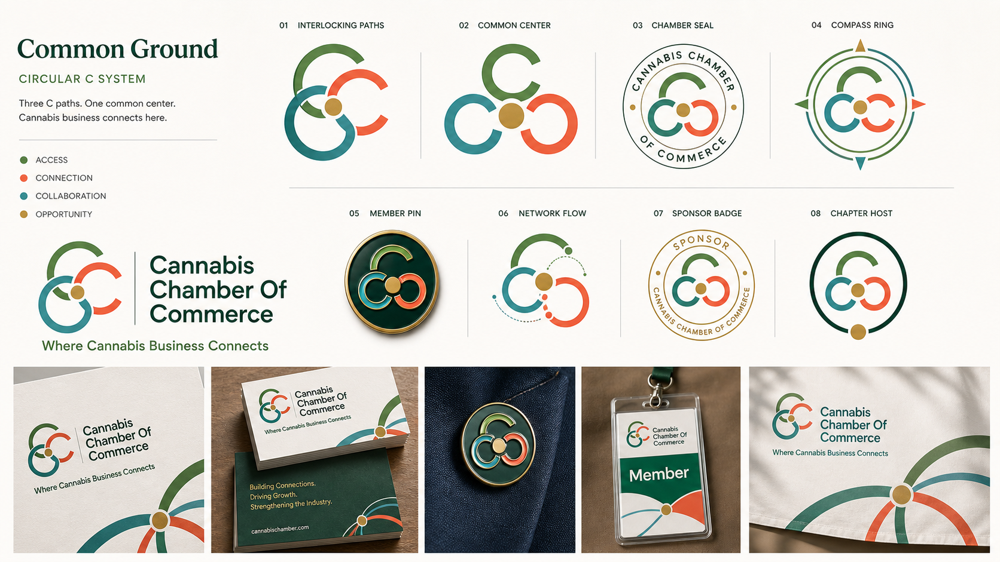
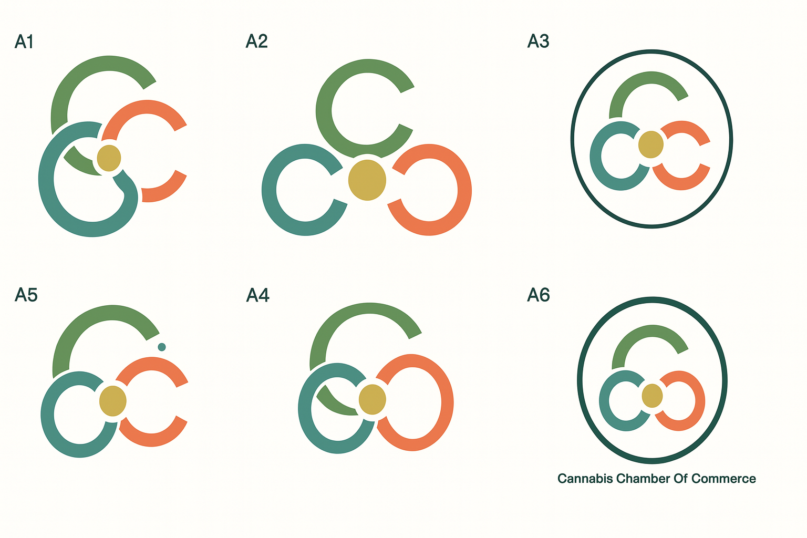
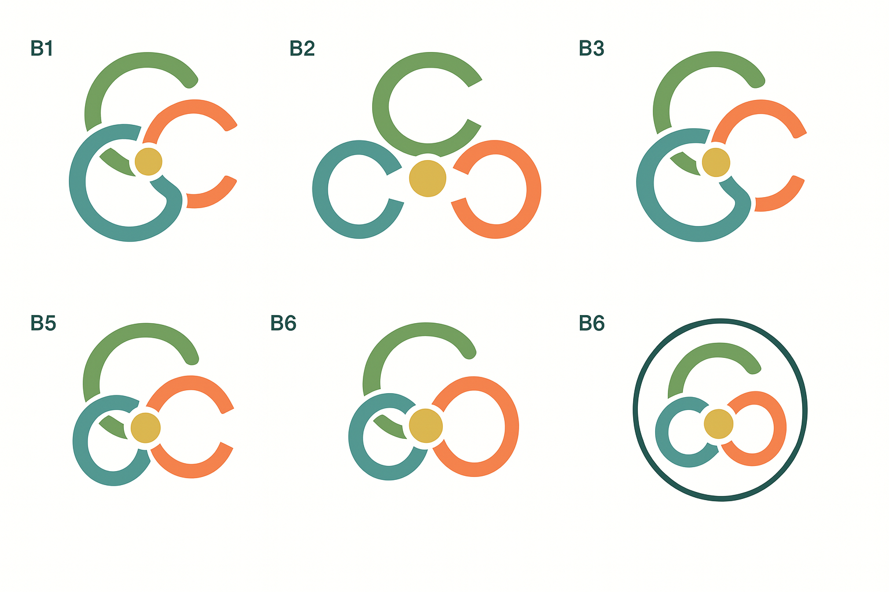

Direction 3 Logo Refinement V5
Keep
The mark direction is the three C-shaped paths around one gold center dot. The middle “new ideas” sheet is dead.
Fix
The C geometry needs to stay circular and balanced. No awkward angled C, no two-C reduction, no G-like shape.
Leaf
The leaf idea should stay optional and negative-space only. It cannot become the primary read.
Reference To Preserve

Close Refinement

Connector Test
